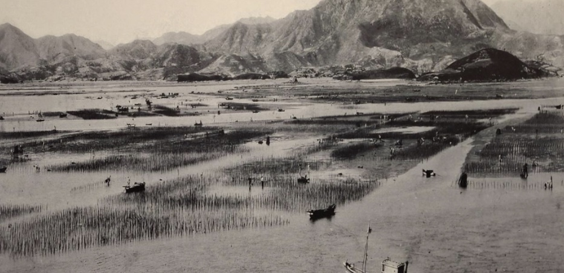
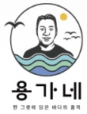
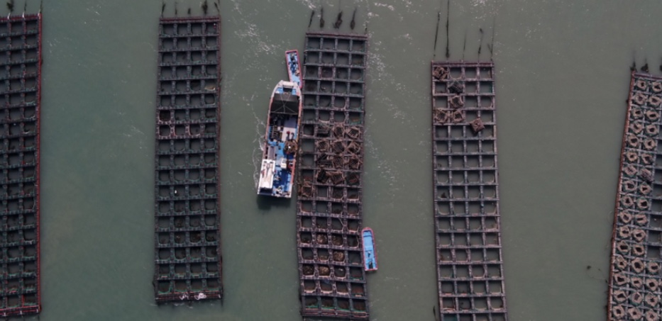
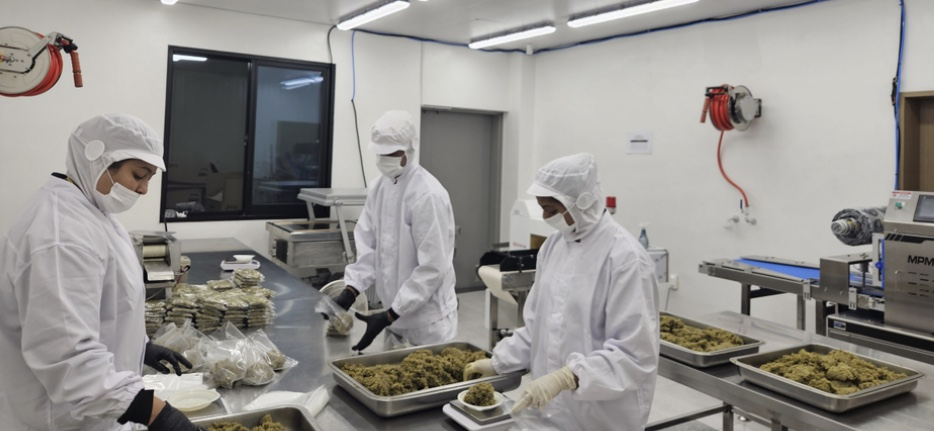

용가네


진도 바다에서 4대째 이어온 수산업 기반 기업으로, 자연 그대로의 원물을 가장 신선한 상태로 가공하여 건강한 먹거리를 소비자들에게 전달하고 있습니다.

직접 양식한 전복과 미역을 기반으로 원료부터 제품까지 책임지는 통합 생산 시스템을 구축하였으며, 글로벌 식품 시장까진 진출하고 있는 브랜드입니다.



진도 바다에서 4대째 이어온 수산업 기반 기업으로, 자연 그대로의 원물을 가장 신선한 상태로 가공하여 건강한 먹거리를 소비자들에게 전달하고 있습니다.

직접 양식한 전복과 미역을 기반으로 원료부터 제품까지 책임지는 통합 생산 시스템을 구축하였으며, 글로벌 식품 시장까진 진출하고 있는 브랜드입니다.